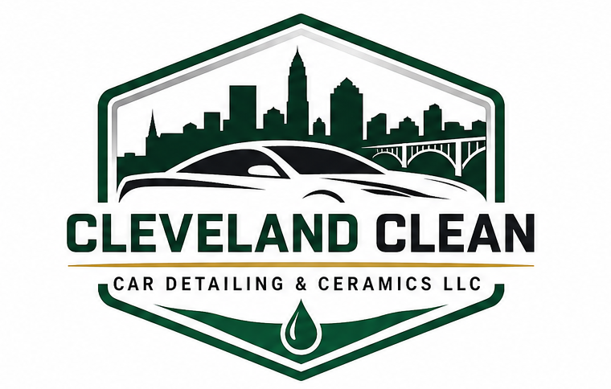
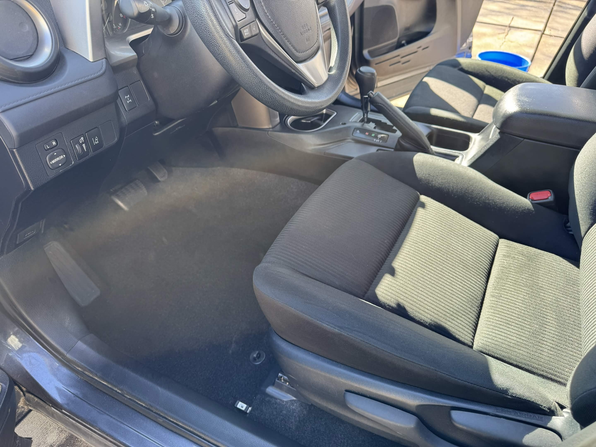
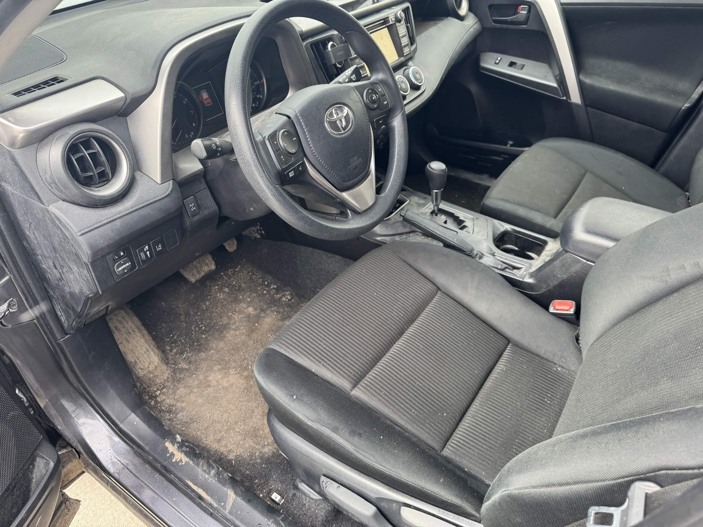
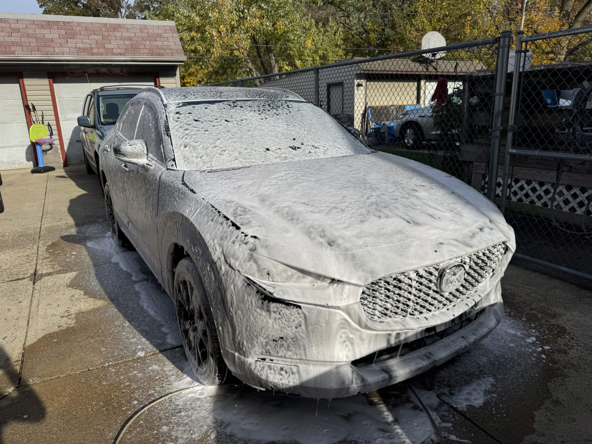
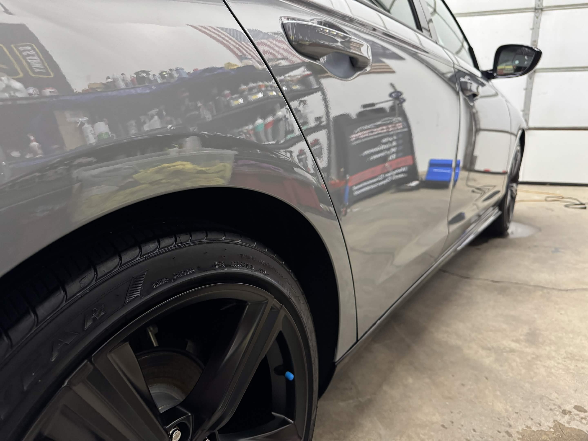
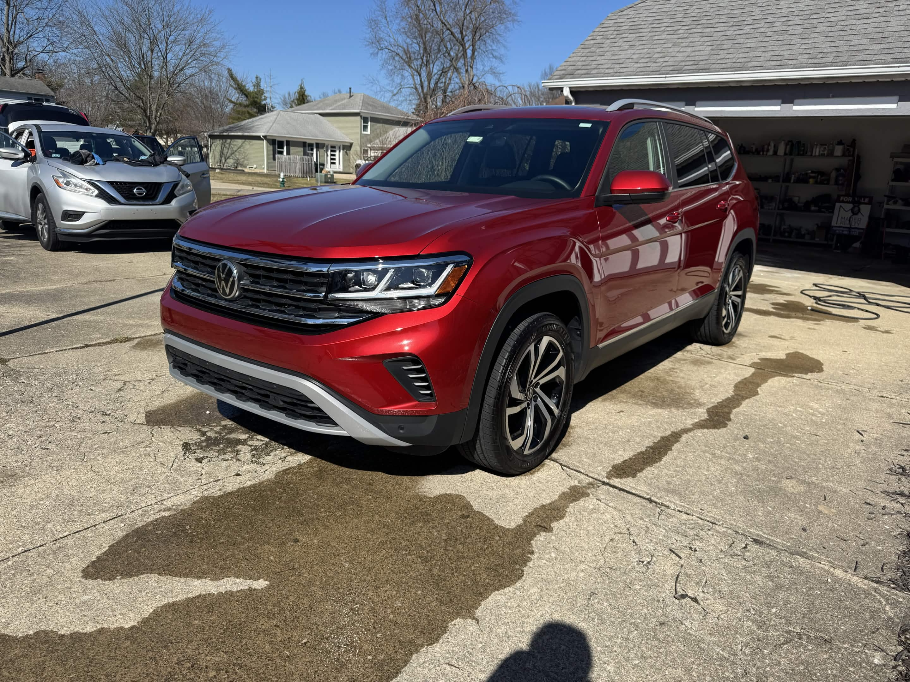

Interior Car Detailing
Vacuuming, crevice cleaning, carpet and mat attention, seat cleaning, dashboard wipe-down, vents, cup holders, and interior glass.
- Great for daily drivers
- Pet hair and crumbs
- Carpet shampoo available


Mobile auto detailing in Cleveland, OH
Deep interior cleaning, foam washes, tire dressing, gloss enhancement, and careful finishing for daily drivers, family SUVs, and weekend cars.
Cleveland car detailing near you
From muddy carpets and dusty dashboards to road film and dull paint, each detail is built around the condition of your vehicle. The goal is simple: a cleaner, sharper car without rushed work or one-size-fits-all service.
Auto detailing services
Vacuuming, crevice cleaning, carpet and mat attention, seat cleaning, dashboard wipe-down, vents, cup holders, and interior glass.
A complete reset with interior deep cleaning plus exterior wash, wheels, tires, door jambs, paint-safe drying, and finishing shine.
Foam pre-soak, contact wash, wheels, tire dressing, bug and grime removal, glass, and a clean finish that brings back gloss.
Before and after
Drag the slider to compare the dirty interior before the detail with the finished cabin after cleaning.

Google reviews
Real customer feedback from the Google listing for Cleveland Clean Car Detailing & Ceramics LLC.
Amazing work. My car was destroyed by my kids and Brendon made the car look brand new! He went above and beyond! Highly recommend 10/10 service!!
Guadalupe Gonzalez
I highly recommend Cleveland Car Detailing! Brandon did a superb job in cleaning my car inside & out. He comes to your house & did a great job! I am recommending his service to all my family & friends! Superb work!!
Ellen Ferreri
These two young men did an outstanding job on my husband's filthy dirty work truck! I was so impressed I had them come back to do my daily driver vehicle and once again, they made a 2010 Town and Country look amazing. Great communication, detailed in their work, great work ethic, and they surely didn't rush! They come to you! Look no further, just hire them!
Carla Kemer
Detailing process
Vehicle condition, stains, high-touch areas, wheels, trim, and paint are reviewed before work begins.
Interior debris, dust, grime, and exterior buildup are cleaned with a careful, surface-appropriate approach.
Glass, tires, panels, mats, and detail points get a final pass so the vehicle leaves crisp and ready.
Detailing gallery



Service area
Book professional mobile car detailing at home or work in Cleveland, OH. Cleveland Clean Car Detailing & Ceramics LLC helps customers searching for interior detailing, exterior detailing, ceramic services, full-service auto detailing, and "car detailing near me" find a local result they can trust.
Car detailing FAQ
Yes. Cleveland Clean Car Detailing & Ceramics LLC serves Cleveland, OH and surrounding areas with mobile detailing appointments.
Interior detailing can include vacuuming, crevice cleaning, carpet and mat cleaning, seat cleaning, dashboard and console cleaning, vents, cup holders, and interior glass.
Yes. Exterior work can include foam washing, wheels, tires, bug and grime removal, glass, gloss enhancement, and ceramic service options.
Ready for a cleaner car?